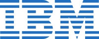
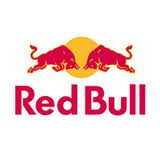

IBM stands for International Business Machines and is one of the worlds largest compaies for manufacturing and selling both software and hardware for computers. The company has its headquarters in Armonk, New York. The average salary at IBM for software engineers is at around $60000-$80000. The average employee does not work more than 60 hours, so long as there are no extraordinary situations (deadlines, large bugs/issues).
The company has gained some fame recently. Besides creating extremely recognized processors, the company has recently tried to show the world what their processors and software can do by competing on a gameshow. But they did not just compete man vs. man, they put man vs. machine on the famous show Jeopardy. IBM placed one of their newest innovations called Watson, an artificial AI that can think and respond to questions, against the champs of the game show. Watson won to the surprise of the contestants. Watson is just one example of the many innovations that IBM has performed and will most likely perform over the next few years Some other and more basic products and services the company currently offers are:

Yes you've probably drank Red Bull but that is not the whole Red Bull experience. From BMX to rally racing and F1 formula racing, Red Bull doesnt quit at the just the energy drink. The company needs some of the best software engineers to compete in the racing world of Formula 1. Red Bull has one of the most advanced racing simulators. This simulator calculates hundreds, if not thousands of calculations a second and computer programmers or engineers are required to design such programs so that the drivers have a chance to learn the tracks without visiting the actual track
Products
Services or Departments